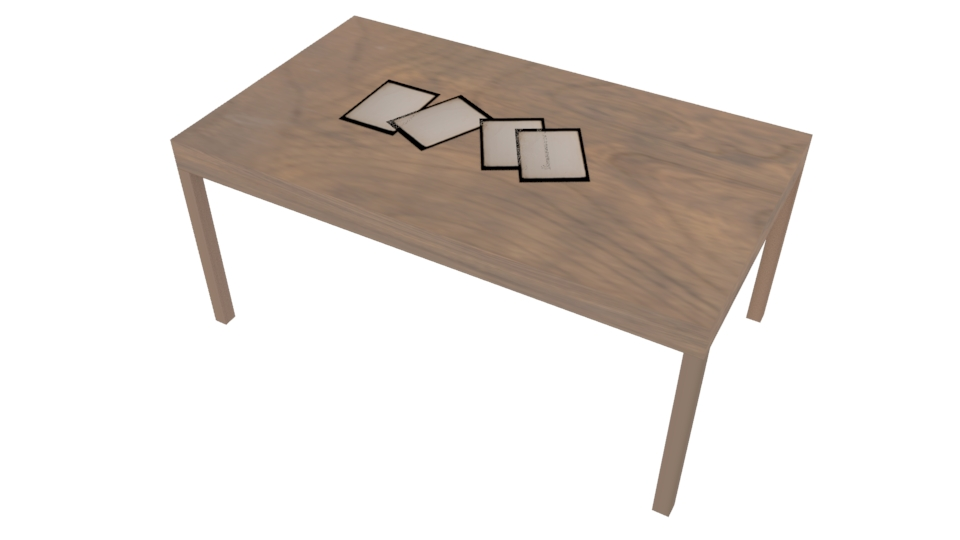
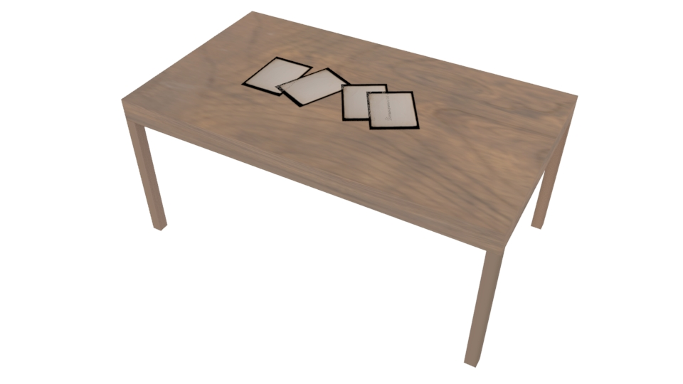
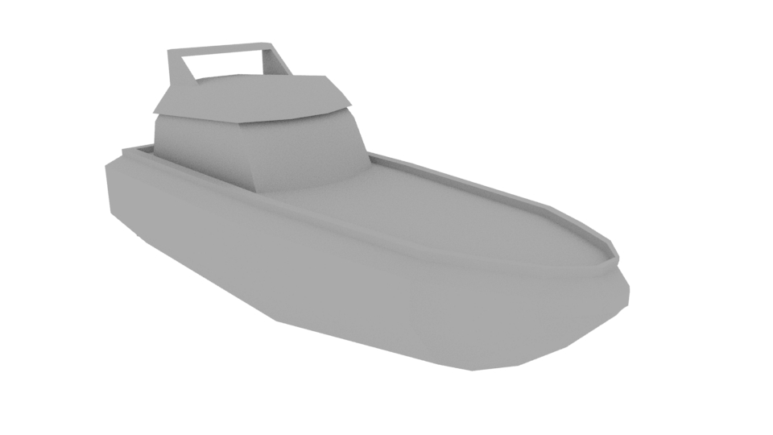
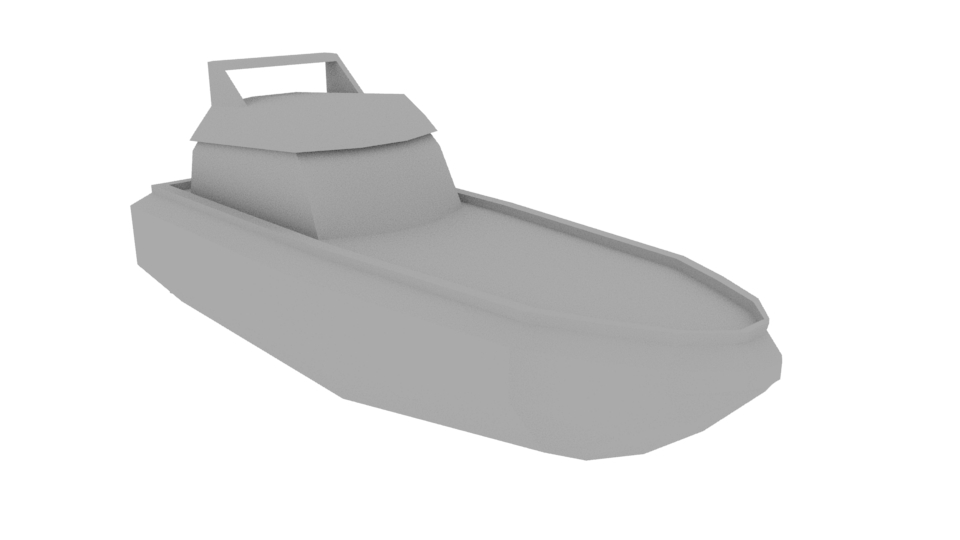

The following models were created entirely by hand in Maya, with texturing and animation done by me where applicable.
 

 


This is a button modeled and textured by me, with a simple keyframe animation showing what happens when the button is pressed by the player.
This is a simple 3D model of the character Garnet from the animated series "Steven Universe". The model was created from scratch by me, and has been fully rigged and skinned.